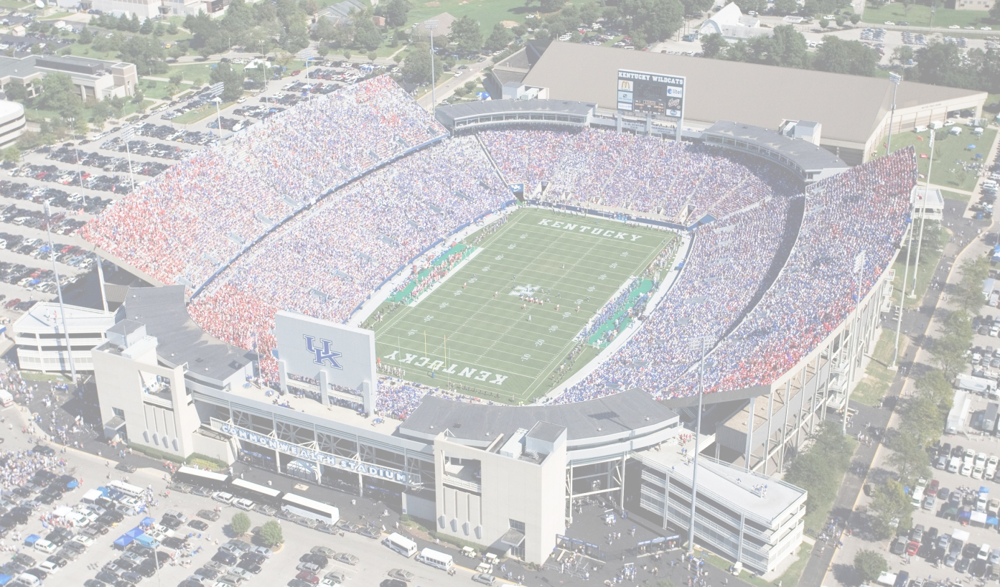
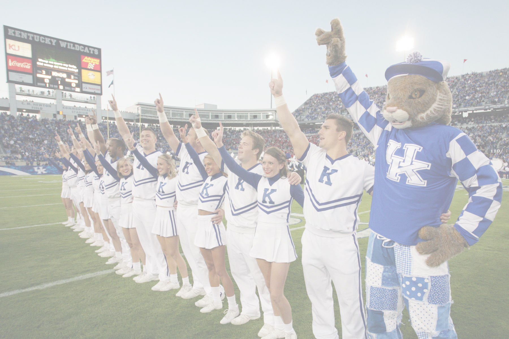

Free parking is available in the Green Lot behind the stadium
Paul S. Benjamin . Janet Biggs . Victoria Fu . Brett Kashmere . Anya Liftig . Lilly McElroy . Didier Morelli . Michael David Murphy . Alix Pearlstein . Joe Sola . Scott Stark 
The UK Art Museum is pleased to announce Videos for a Stadium, a presentation of sports-related videos by a range of nationally known artists, screened at Commonwealth Stadium on Thursday, April 6, from 7-9 pm. Tickets are $15 for general public and $10 for Museum members. Funds raised at this event will go to support the Museum’s FREE Admission policy.
This unique ‘art meets sports” event explores competition, skill, endurance, teamwork, and body movement. The national anthem, the green grass of various fields, and sports language are also examined. The videos will be presented on the stadium’s high resolution screen and viewed from field level seats in the end zone.
Carl Nathe, the public address announcer at UK Football games, will introduce each artist’s work and provide commentary. Concession food and drinks that are normally available during games will be offered for purchase before and after the screening.
For more information, contact Amy Nelson at: anelson@email.uky.edu.
Sponsored by Creative Lexington and Moontower Music Festival